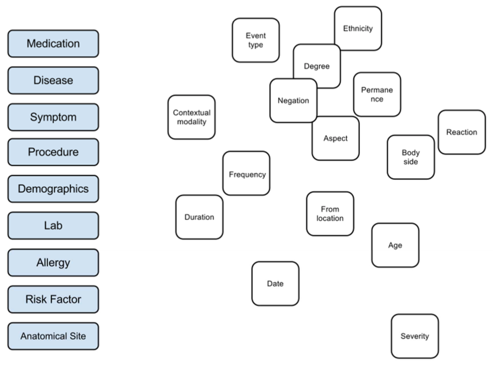
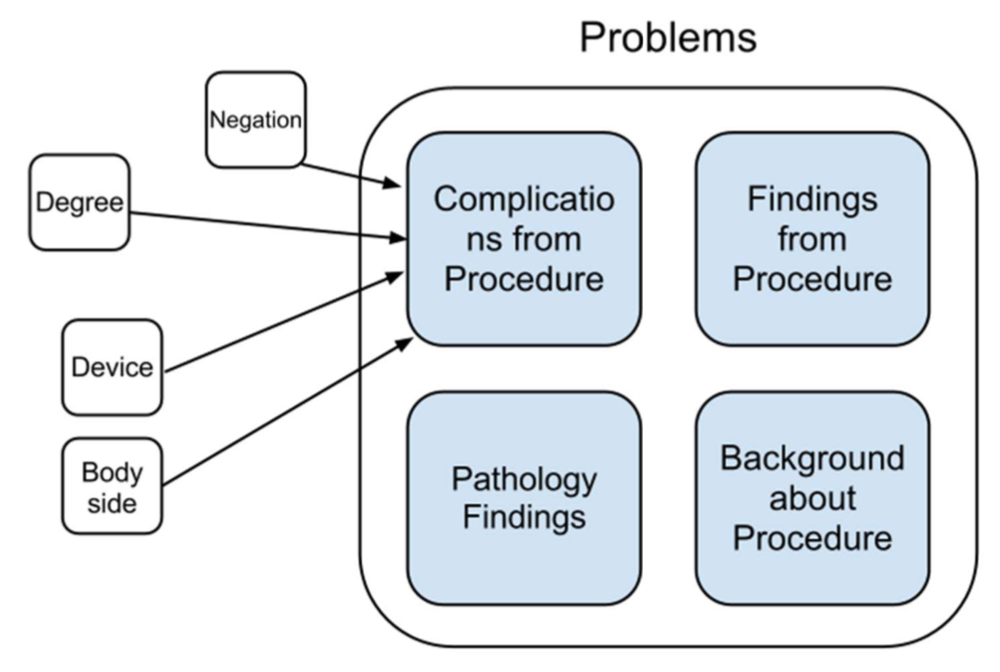
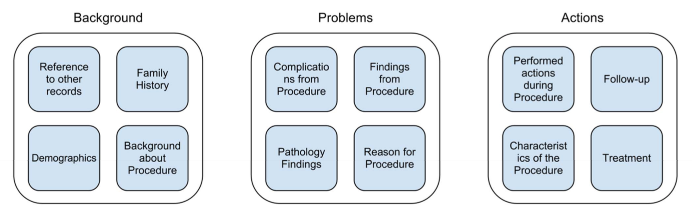

Schema Builder: Web-based UI for Authoring and Sharing Natural-Language Processing Schemas
I had the opportunity to work with Schema Builder while working as a research assistant under Dr. Wendy Chapman's supervision through UCSD's DBMI internship program. My role in this project was to conduct usability studies, and design and evaluate a prototype user interface for Schema Builder. Specifically, I systematically investigated the workflow patterns in the clinicians’ line of work.
- Project Date: Jun 2012 - Sep 2012
- Affiliations: Department of Biomedical Informatics @ UC San Diego
- Funding: NIH 1R01LM010964, VAHSR&D HIR 08-204
- Collaborators: Yang Liu, Melissa Tharp, Harry Hochheiser, and Wendy W. Chapman.
Background
Clinical research, quality assessment, and decision support often require targeted extraction of information from clinical narratives. While Natural Language Processing (NLP) systems can provide clinical professionals the means to query rich annotations of clinical text, they often lack extensive NLP expertise to create the queries. Schema Builder aims to address the gap between the NLP system output and the targeted information needs of domain experts by providing a user interface to assist them in building rich concept-oriented, unambiguous schemas that can be used to map to NLP annotations.
Goal
The goal of this research is to investigate the targeted information needs of clinical professionals related to reviewing clinical text reports.
Methods
- Cognitive walkthrough
- Semi-structured interviews
I was mainly interested in clinicians' mental model of how they process medical knowledge. Cognitive walkthroughs helped me structure concept elicitation tasks and build rapport with clinicians. Later, I defined use case scenarios for pathology reports of colonoscopy exams and adverse drug events.
{kind=link}

I conducted 3 online sessions of 30 minute task-oriented interviews studies with clinicians over an interactive drawing interface to understand their mental model.
{kind=link}

To align their mental model with our understanding of the NLP model, I asked clinician participants to map each category of medical concepts (blue) to the qualitative modifiers or attributes (white) that can be assigned to each concept.
Key Findings
{kind=link}

Clinical professionals tend to organize medical concepts under three broad categories: background, problems and actions. For the colonoscopy exam use case, the user was interested in seeing a list of things to be marked off if they were done. On the other hand, in the adverse drug events use case, the user was interested in seeing the temporal order of events in relation to the administration of a drug while the patient is hospitalized.
Prototype Design

Schema Builder is a web-based user interface that allows clinicians to define custom natural language processing (NLP) schemas in order to extract important information from unstructured free-text patient records. Schema Builder allows the user to create rich concept-oriented, unambiguous schemas that consist of definitions, linguistic and semantic attributes, synonyms, and mappings to standardized vocabularies. The application assists the user by leveraging a detailed generic NLP schema and providing candidate lists for synonyms, definitions, and concepts from standardized vocabularies. Schemas can be shared among users.
Colonoscopy Use Case: I focused on redesigning a pre-existing UI for Schema Builder, which is based on the colonoscopy use case. I noticed that the UI was cluttered and did not follow a logical flow.
{kind=link}
{kind=link}
Embedding Knowledge Representation through Phrase Builder: my interviews with a colonoscopist helped me generate the insights needed to design an interface that builds upon their mental model. It starts with selecting a person of interest, their relationship to a particular concept (such as a diagnosis) and selecting attributes that are related to the concept. I designed the Phrase builder feature, which helps colonoscopists construct a one line summary of the schema. A candidate list of attributes are embedded within each word when generating the phrase.
In a preliminary evaluation of this work, physicians and clinical researchers from the UCSD and Harvard Medical Center expressed their enthusiasm and wished to use Schema Builder in their practice as soon as possible.
Publications
| Schema Builder: A Web-based User Interface for Authoring and Sharing Natural-Language Processing Schemas. Yang Liu, Melissa Tharp, Matthew K. Hong, Harry Hochheiser and Wendy W. Chapman. Proceedings of the AMIA 2013 Annual Symposium (AMIA 2013), Washington, DC, USA, 2013. |